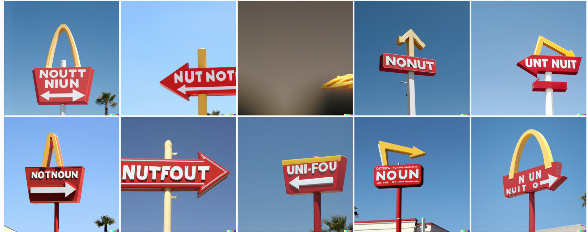
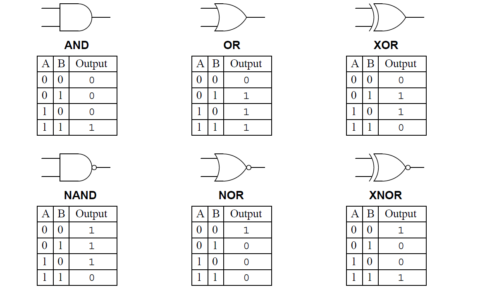

Slide 1
Einführung in Programmierung und Datenbanken
joern ploennigs
programmieren und datenbanken - operatoren
1

Programmierung und Datenbanken
Motivation
Computer und Architekturen
Programmierung und Datentypen
Fehler und Debugging
Objektorientierung u. Softwareentwurf
Verzweigungen und Schleifen
Funktionen und Rekursion
grundlagen
modellierung

Slide 3
3
Operatoren
DALL-E 2: A sign for in and out
programmieren und datenbanken - operatoren

Slide 4
4
programmieren und datenbanken - operatoren
Anweisungen und Ausdrücke
Eine Anweisung (engl. statement) stellt eine in der Syntax einer Programmiersprache formulierte einzelne Vorschrift dar, die im Programm nacheinander auszuführen ist Eine besondere Form von Anweisungen sind Ausdrücke (engl. expression) welche immer einen Wert zurückgeben und somit einen Datentypen haben Bei einer Variablenzuweisung stehen die Ausdrücke rechts von dem Zuweisungsoperator Variablenname = Ausdruck
Beispielausdrücke: Konstante Werte wie z. B. 5 oder “ABC“ Der Wert einer Variablen, z. B. x Das Ergebnis von Operationen (Dazu im folgenden mehr) Ausdrücke können über Operatoren kombiniert werden, was wieder einen Ausdruck erzeugt
Slide 5
5
programmieren und datenbanken - operatoren
Arithmetische Operatoren aus der Mathematik!
Bilden einen oder zwei Werte (Operanden) auf einen neuen Wert ab Arithmetische Operatoren auf zwei Werten: + - * / (Grundrechenarten) Operator auf einem Wert: - (Negativ)
In der Programmierung: Nimmt ein bis zwei Ausdrücke und ist selbst ein Ausdruck Können verkettet werden – Berechnungsabfolge ist wie in der Mathematik (6 + a) * (-b)
Slide 6
6
programmieren und datenbanken - operatoren
Zuweisungsoperatoren
Kombinieren von arithmetischen Operatoren mit einer Zuweisung (=) Führt einen Operator auf den Variablenwert und den Rückgabewert des Ausdrucks aus und weist den entstehenden Wert der Variable zu Beispiel: a = 5 # a hat den Wert 5 a += 1 # a hat nun den Wert 6
In der Praxis meistens als Abkürzung für simple Berechnungen relevant.
Slide 7
7
programmieren und datenbanken - operatoren
Vergleichsoperatoren - Gleich ist nicht =
= ist in den meisten Programmiersprachen das Symbol für das Belegen von Variablen Für Aussagen über die Gleichheit von Werten nutzen wir daher folgende Operatoren.
Slide 8
8
programmieren und datenbanken - operatoren
Logische und Bitweise Operatoren
In Python gibt es nicht die üblichen logischen Operatoren & (AND), | (OR), ~ (NOT) Stattdessen werden logische Operatoren ausgeschrieben and, or, not Angewendet auf boolesche Werte (bool) mit den Werten True/False
True and True
False or not False
Slide 9
9
Welche Ergebnisse gibt es für welche logische Operation? (Entspricht der Aussagenlogik)
programmieren und datenbanken - operatoren
N steht für Negation


Slide 10
Boolesche Logik
10
programmieren und datenbanken - operatoren
Eine CPU kann nur einfache logische Operationen ausführen wie NOT, AND, OR, XOR und Negationen. Aus diesen Grundoperationen lassen sich komplexere Operationen zusammen
N steht für Negation


Slide 11
11
programmieren und datenbanken - operatoren
Logische und Bitweise Operatoren
In Python gibt es nicht die üblichen logischen Operatoren & (AND), | (OR), ~ (NOT) Stattdessen werden logische Operatoren ausgeschrieben and, or, not Angewendet auf boolesche Werte (bool) mit den Werten True/False
True and True
False or not False
Bitweise Operatoren nutzen die üblichen Operatoren werden aber nur auf Bit-Werte Zusätzlich: (mit a = 0011 1100 als Beispielwert)
~a = 1100 0011 # Komplement
a << n = 1111 0000 # Linksverschiebung um n, Multiplikation mit 2n
a >> n = 0000 1111 # Rechtsverschiebung um n, Division durch 2n
Slide 12
12
programmieren und datenbanken - operatoren
Operatoren - Verbindung zur Hardware
Beachte die Ähnlichkeit zur Hardware-Funktion des ALU! Aus 1 bis 2 Operanden wird mittels einer festgelegten Operation ein Resultat. Der ALU berechnet also Ergebnisse von Operatoren.
Überspitzt formuliert: Alle Berechnungen, die jemals auf einem Computer ausgeführt worden sind, waren nichts als Abfolgen von Speicherbelegungen und den ebend vorgestellten Operatoren.
Slide 13
13
Fragen?
DALL-E 2: A psychedelic DJ with a question mark for a head
programmieren und datenbanken - operatoren